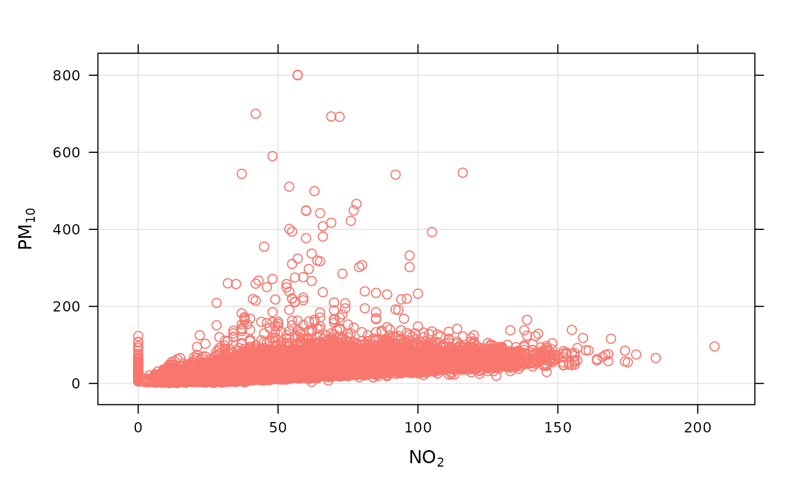

Workhorse function that automatically applies routine text formatting to common expressions and data names used in openair.
Details
quickText is routine formatting lookup table. It screens the
supplied character vector text and automatically applies formatting
to any recognised character sub-series. The function is used in a number of
openair functions and can also be used directly by users to format
text components of their own graphs (see below).
Examples
#example 1
##see axis formatting in an openair plot, e.g.:
scatterPlot(mydata, x = "no2", y = "pm10")

#example 2
##using quickText in other plots
plot(mydata$no2, mydata$pm10, xlab = quickText("my no2 label"),
ylab = quickText("pm10 [ ug.m-3 ]"))